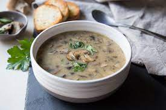

Mushroom Soup

Description
This dish is made with a mixture of the most degedant Mushroom in a boiling pot of flavour. Hearty, filling and delickious
Ingredients
Steps
- Cut and remove mushroom stems
- Heat up butter and add onion. Caramalise the onions
- Add mushrooms and cook down
- Add cream
- Blend and serve